Автосервис · Лазурная улица, 27/4 · Октябрьский район
Вам не расскажут,
что сломалось. Вам покажут
В отзывах о нас чаще всего повторяется одно слово — «показал». Показал на подъёмнике, что стучит. Показал старые колодки. Сфотографировал и прислал. Так работать дольше, зато потом не бывает разговора «а за что это».
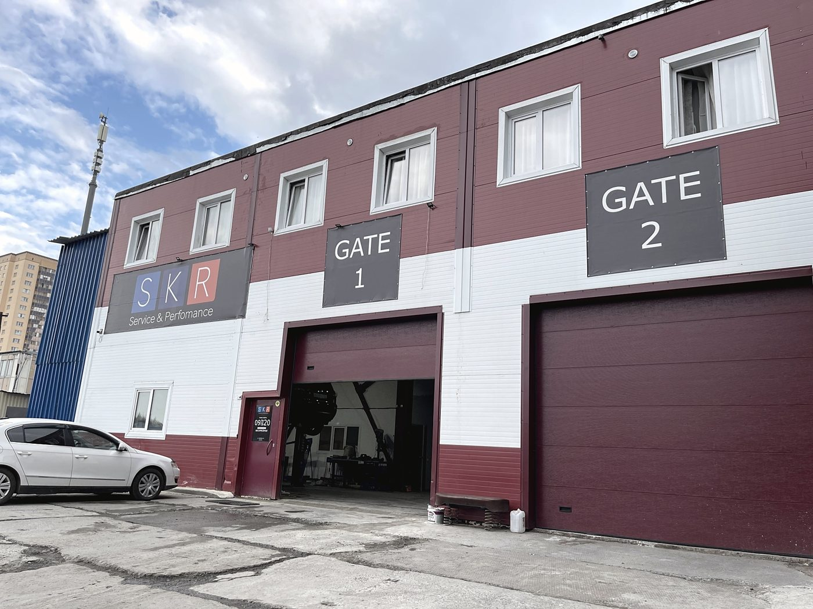
Фотоотчёт
Вот что мы обычно
показываем клиенту
Все снимки ниже — с наших работ. Ничего постановочного: так выглядят детали, которые мы снимали с машин. Если вам будет непонятно, что на фото, — объясним словами прямо на подъёмнике.
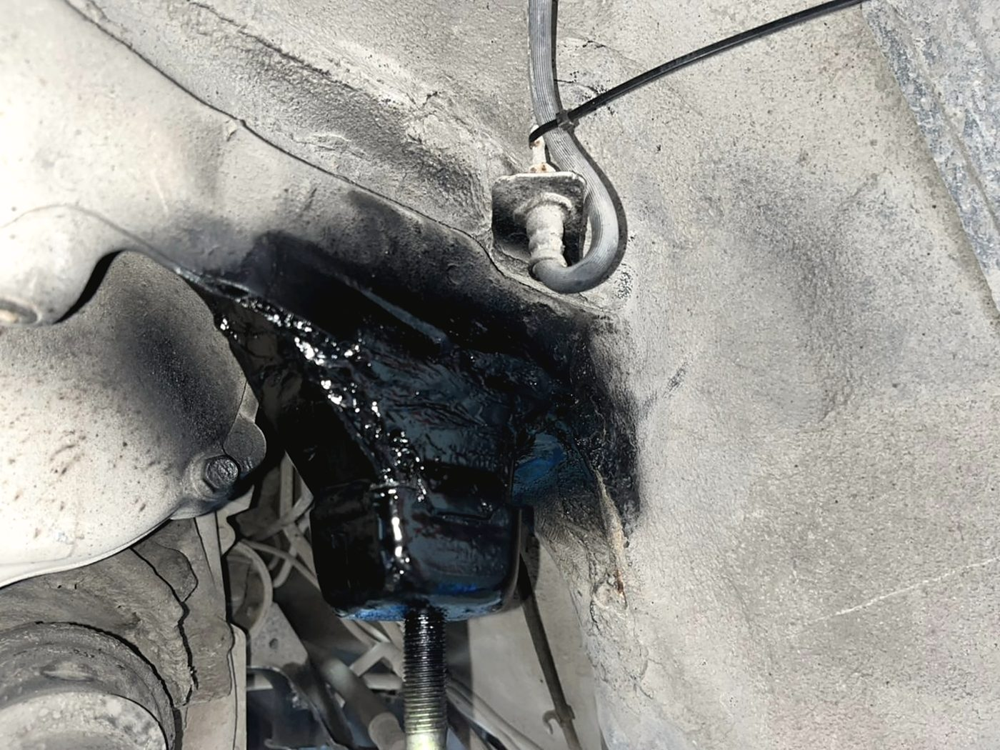
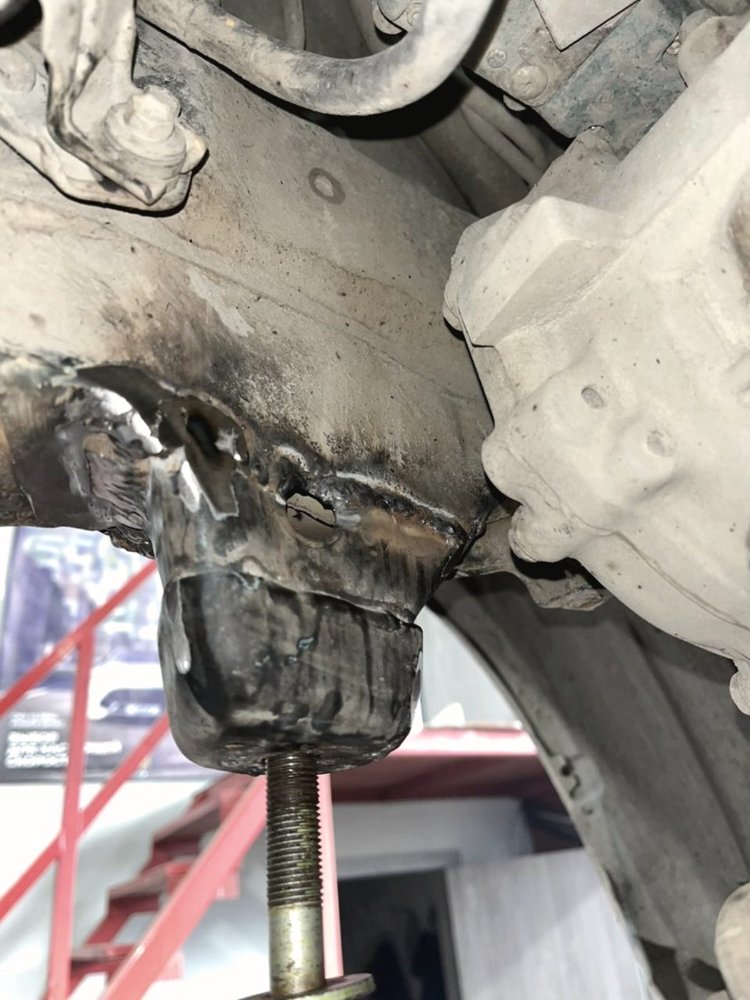
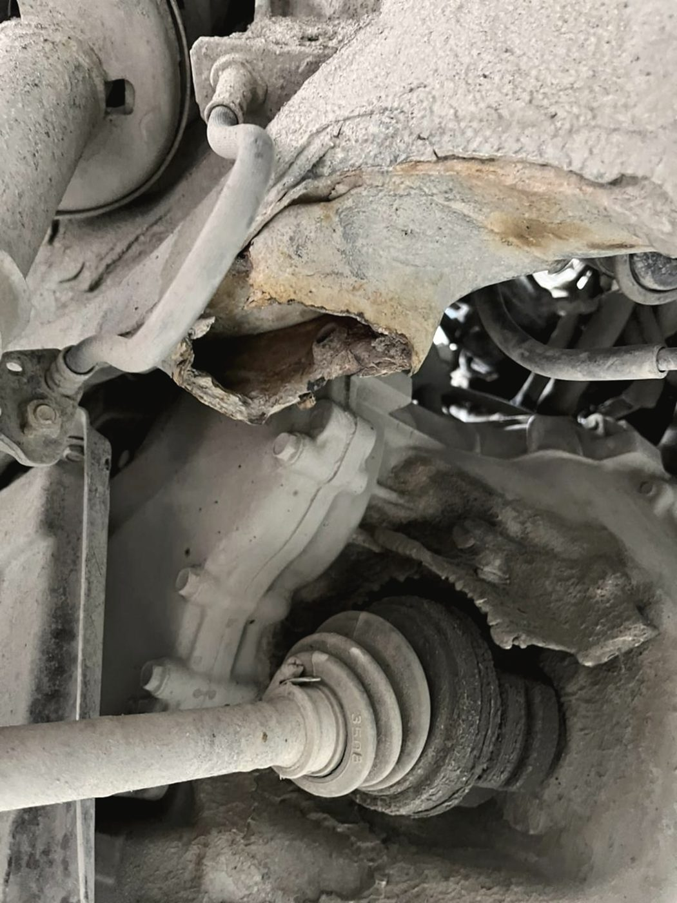
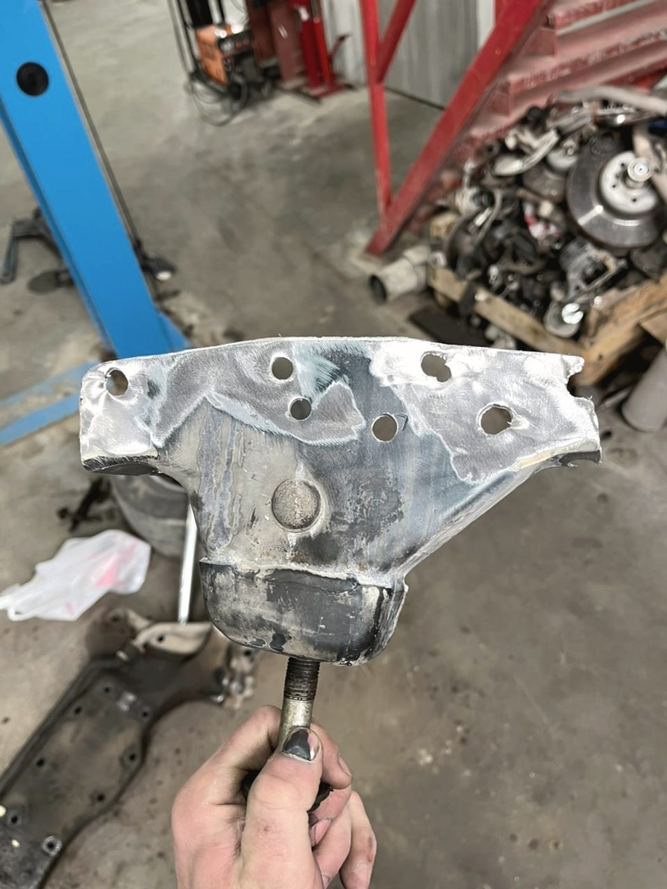
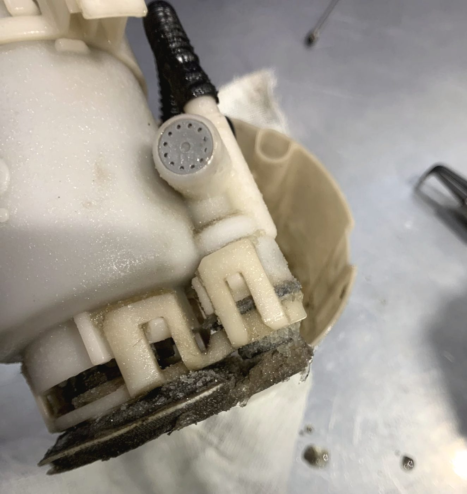
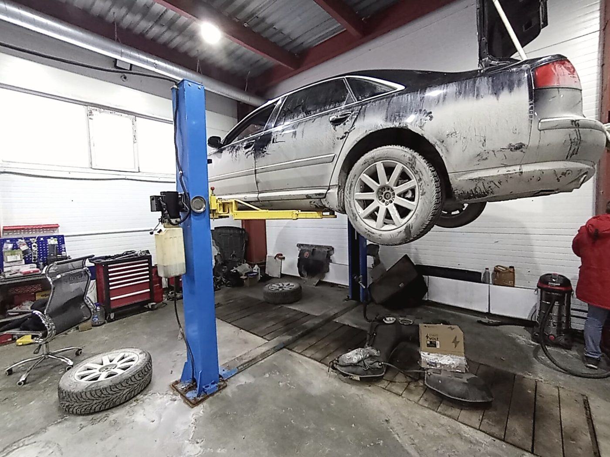
Про деньги
Сумма, названная до работ,
к концу не меняется
Смотрим, находим, называем сумму — и только потом берём ключи. Если по ходу вскрылось что-то ещё, звоним и спрашиваем, а не ставим перед фактом на выдаче.
Нашли люфт, но менять пока не обязательно — так и скажем. Предупредим, сколько ещё можно ездить, и не будем настаивать.
Если дело срочное — приезжайте, только будьте готовы подождать, пока освободится подъёмник. По телефону честно скажем, сколько это примерно займёт сегодня.
Марки, по которым работаем
Работы
Что делаем
Компьютерная диагностика
Ищем причину, а не гасим ошибку. Смотрим эндоскопом, замеряем давление — если это нужно, чтобы понять точно.
Ходовая часть
Стойки, шаровые, стойки стабилизатора, рычаги, ступицы, тормоза. Всё изношенное показываем на подъёмнике.
Ремонт двигателя
Бензин и дизель, вплоть до капитального ремонта с расточкой и гильзовкой блока.
АКПП и МКПП
Диагностика, ремонт, замена масла в коробке с обслуживанием фильтра.
Рулевые рейки
Течь, стук, тяжёлый руль. Ремонт узла с последующим развалом-схождением.
Замена масла и ТО
Аппаратная замена. Льём то масло, которое выбрали вы, и показываем слитое.
Электрика и электроника
Проводка, датчики, катушки, стартеры и генераторы, сигнализации, спецоборудование.
Климат и кондиционер
Поиск утечки, замена уплотнений, заправка. Фильтр салона меняем заодно, если пора.
Выхлоп и сварка
Глушитель, гофра, крепления. Варим на месте, без поездки в другой сервис.
Подбор автомобиля перед покупкой
Смотрим машину до сделки: кузов, подвеска, мотор, ошибки. Отчёт со снимками — чтобы вы решали, зная всё.
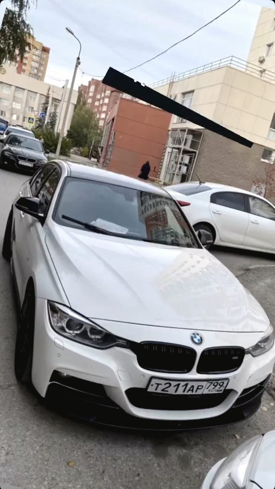
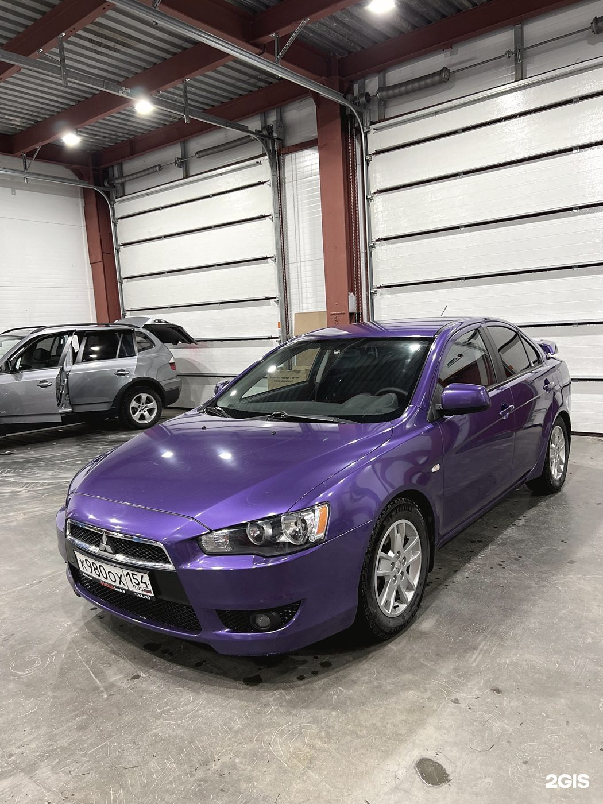
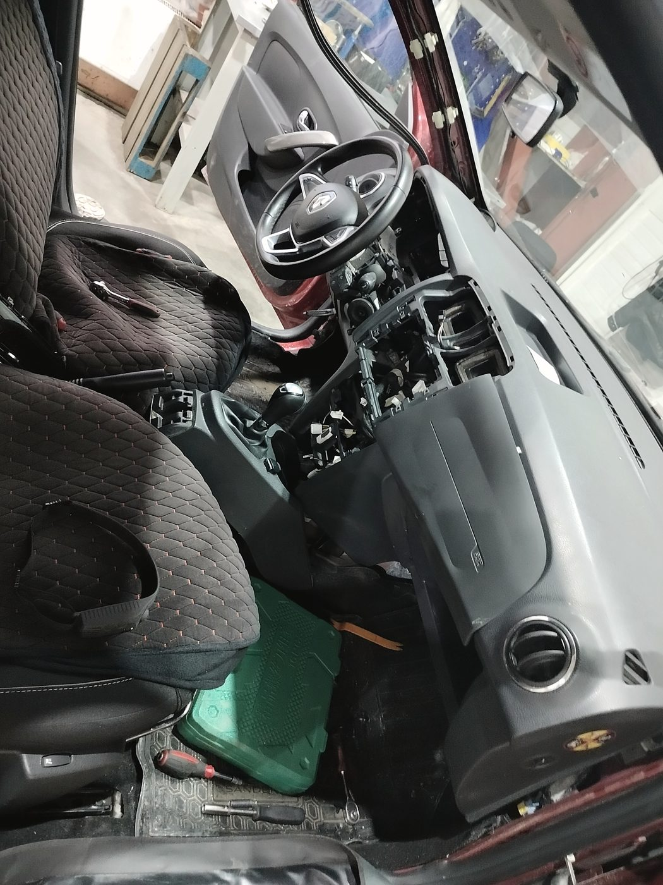
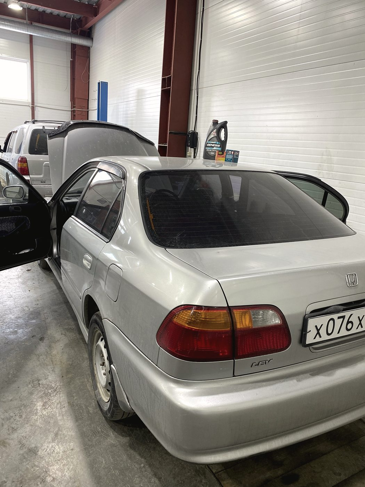
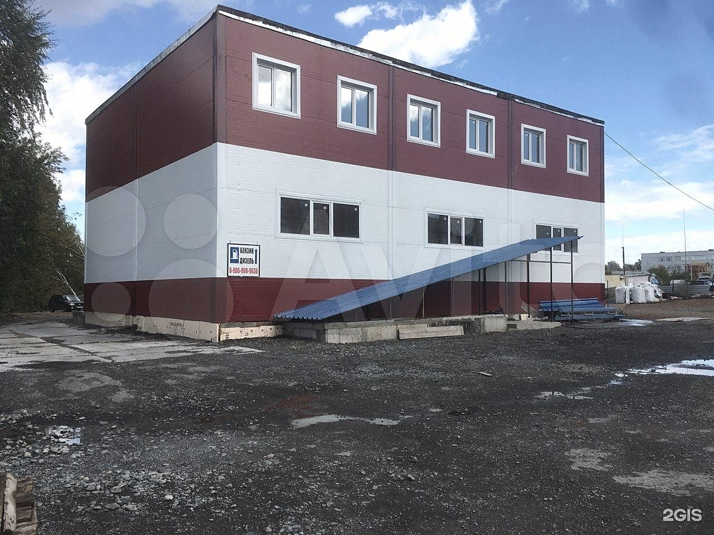
Честно про мелочи
Чего у нас пока нет
- Кофе в зоне ожидания. Об этом нам уже написали в отзыве — и это правда, кофемашины нет. Wi-Fi есть, вода есть.
- Очереди случаются. В загруженный день ждать придётся — мы говорим об этом по телефону заранее, а не когда вы уже приехали.
- Мы не работаем в субботу и воскресенье. Зато в будни — до восьми вечера, можно заехать после работы.
Отзывы · 4,9 из 5 по 235 оценкам в 2ГИС
«Показал на моей машине, что стучит, даже фото сделал. Теперь я спокойна за свою ласточку»
Марина Иванова · 29 июля 2026
Мастер показал изношенные детали на подъёмнике, объяснил, что ещё нужно доделать. Всё заменили за три часа. Цена была озвучена до начала работ и не изменилась в процессе. Всё честно, прозрачно, без сюрпризов.
Александр Воробьёв · 10 июля 2026
Искал нормальный сервис по BMW в Новосибирске, перепробовал три, пока не нашёл SKR. Сделали капитальный ремонт двигателя — гильзовка, расточка. Качество работ пять баллов, машина поехала как новая.
Карен Петерсон · 2 августа 2026
Контакты
Лазурная улица, 27/4
Октябрьский район, Новосибирск
+7 952 902-52-22
Сб, Вс — выходные